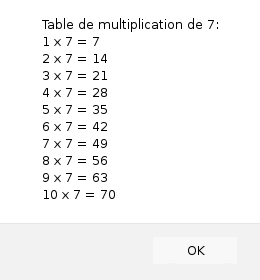
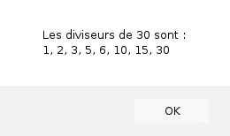

Cette leçon présente les structures de contrôle itératives. Les boucles permettent de répéter des portions de code en fonction de certains critères
Maîtriser les concepts de code itératif, d'expression booléennes et de test. Savoir écrire des codes simples utilisant les structures de contrôle while, do-while et for. Etre capable de choisir la bonne forme itérative en fonction de la situation.
La forme while Dans de nombreuses situations, l'utilisateur d'une application web doit saisir des informations (nom, email, login, mot de passe, etc.) et l'application doit alors vérifier les informations fournies. Supposons par exemple qu'on demande à l'utilisateur de chosir un identifiant pour son inscription sur un site web avec la constrainte suivante : l'identifiant doit être une chaîne d'au moins cinq caractères. Si l'utilisateur propose un identifiant qui ne respecte pas la contrainte, le programme lui demande d'en proposer un autre. On peut résumer la situation de la façon suivante :
Pour écrire le code équivalent en JavaScript on utilise la forme while :
Le mot-clef while définit le début de la boucle. Il est immédiatement suivi du test entre parenthèses et enfin du corps de la boucle. La toute première expression qui est évaluée dans une boucle while est le test. Si le test est vrai on exécute le corps de la boucle, puis on revient au test. Si le test est faux, on quitte la boucle et on passe aux instructions qui suivent la boucle. Le test est une expression à valeurs booléennes identique à celle utilisée dans une forme if. Cette expression peut être aussi complexe que l'on veut.
Par exemple, le code suivant teste si l'identifiant fourni par l'utilisateur est une chaîne d'au moins cinq et d'au plus dix caractères :
Remarquez que dans le code précédent, la variable identifiant est déclarée à l'extérieur de la boucle, sinon elle ne serait pas visible après la boucle dans l'expression paramètre de la fonction alert !
Ecrivez un code qui demande à l'utilisateur un prix en euros (un nombre) et qui affiche le prix équivalent en francs (le taux de conversion est : 1 euro = 6,55957 francs). Tant que l'utilisateur ne fournit pas un nombre, le programme lui demande d'entrer une nouvelle valeur. Le résultat de la conversion doit être un nombre à au plus deux décimales (pensez à utiliser les fonctions isNaN, Number et toFixed)
Ecrivez un programme qui permet de jouer au jeu suivant : le programme tire un nombre au hasard compris entre 1 et 100, et le joueur doit le deviner. Le jeu se déroule de la façon suivante :
Ecrivez un programme qui ouvre une porte après que l'utilisateur ait fourni un mot de passe. Le mot de passe est une chaîne de caractères donnée (et stockée dans une variable du programme). L'ouverture de la porte est simulée par l'affichage d'une fenêtre avec le message "la porte est ouverte". Tant que le mot de passe fourni est erroné, le programme le redemande et n'ouvre pas la porte. Lorsque le bon mot de passe est fourni, la porte s'ouvre. Produisez une deuxième version du programme qui maintenant n'autorise que trois essais pour donner le mot de passe correct.
Ecrivez un programme qui demande à l'utilisateur un nombre compris entre 2 et 10, et qui affiche dans une fenêtre la table de multiplication de ce nombre. Par exemple, si l'utilisateur saisit le nombre 7, le programme affiche une fenêtre du genre

Si le nombre fourni par l'utilisateur n'est pas compris entre 2 et 10, le programme affiche un message d'erreur et redemande un nombre, et ce jusqu'à ce que le nombre fourni soit correct.
La forme while est la structure de contrôle itérative fondamentale. Elle permet d'écrire un code itératif quelconque. Cependant, il existe deux autres structures de contrôle itératives mieux adaptées à certaines situations.
La première de ces structures est la forme do-while. Cette forme ressemble beaucoup à la forme while mais cette fois, le test se trouve en bas, après le corps de la boucle.
On peut reprendre un des exemples précédents et utiliser un do-while à la place d'un while :
A la différence avec un while, dans une forme do-while, le corps de la boucle est toujours exécuté au moins une fois au début.
Ecrivez un programme qui permet à l'utilisateur de saisir une suite de nombres quelconques, et qui affiche à la fin de la saisie le nombre total de nombres saisis, la somme de ces nombres et la moyenne de ces nombres. Pour terminer la saisie, l'utilisateur doit saisir la chaîne de caractères "stop". Si l'utilisateur fournit une chaîne de caractères qui n'est ni un nombre ni la chaîne "stop", le programme le signale et demande une nouvelle valeur. Utilisez la forme do-while pour implémenter la boucle.
Cette forme s'utilise principalement quand on dispose d'une variable d'itération. Par exemple, le code suivant affiche une série de fenêtres contenant les entiers successifs de 1 à 10 :
La boucle for est formée de quatre parties :
Reprenez l'exercice 4, en utilisant cette fois une boucle for à la place de la boucle while.
Ecrivez un programme qui demande à l'utilisateur un nombre, et qui affiche dans une fenêtre tous les diviseurs de ce nombre, y compris 1 et lui-même. Par exemple, si l'utilisateur fournit le nombre 30, le programme affiche la fenêtre suivante :

Au début, le programme boucle tant que l'utilisateur n'a pas fourni une chaîne de caractères qui est un nombre strictement positif. Pour savoir si un nombre x est divisible par un nombre y, il faut vérifier que le reste de la division entière de x par y est égal à 0 à laide de l'opérateur %. Ainsi, si le test x % y == 0 est vrai, alors x est divisible par y.
Un nombre entier supérieur à 1 est un nombre premier si et seulement si il n'est divisible que par 1 et par lui-même. En vous inspirant de l'exercice précédent, écrivez un code qui demande à l'utilisateur un nombre entier supérieur à 1, et qui dit dans une fenêtre si le nombre est premier ou non. Produisez ensuite une deuxième version du programme qui utilise une boucle while pour déterminer si le nombre est premier ou non. Dans cette deuxième version, la boucle se termine dès qu'on a déterminé que le nombre n'était pas premier.